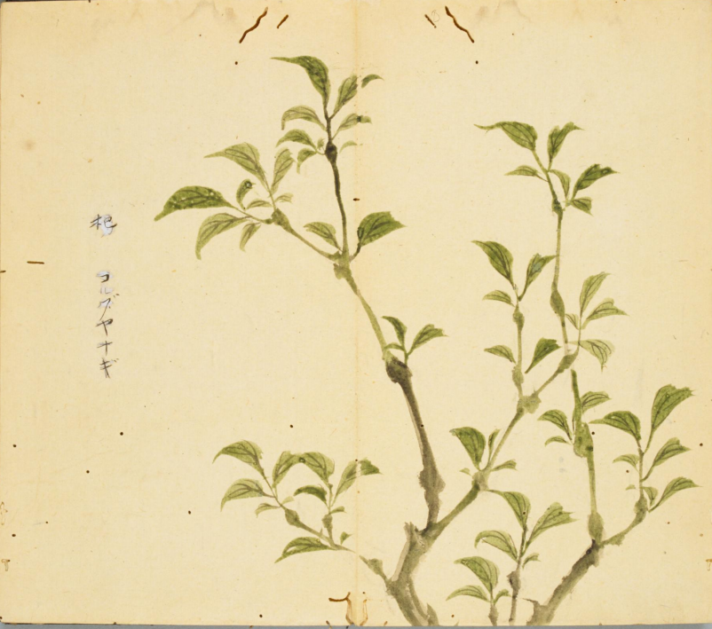
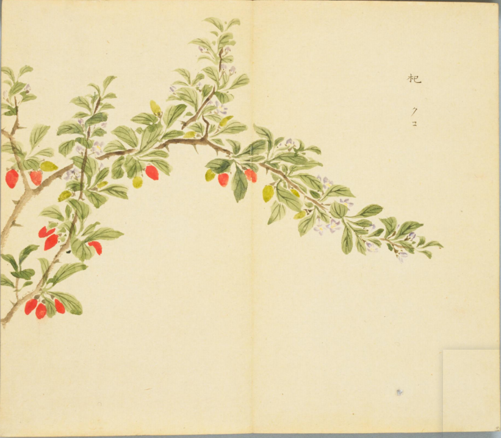
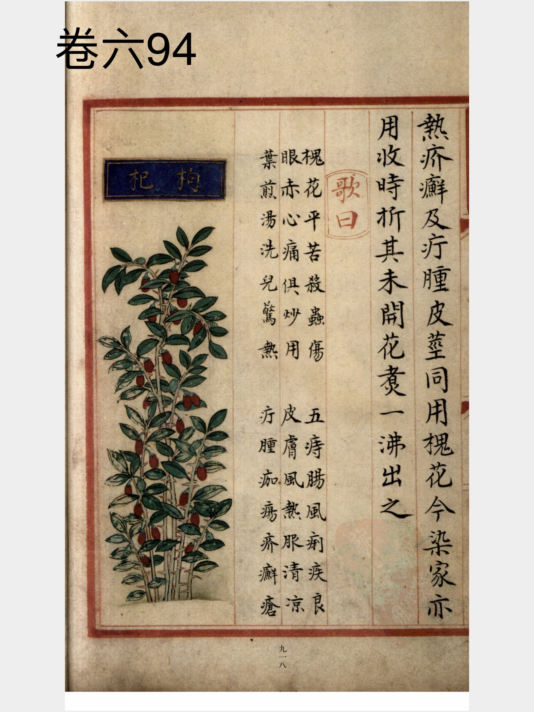
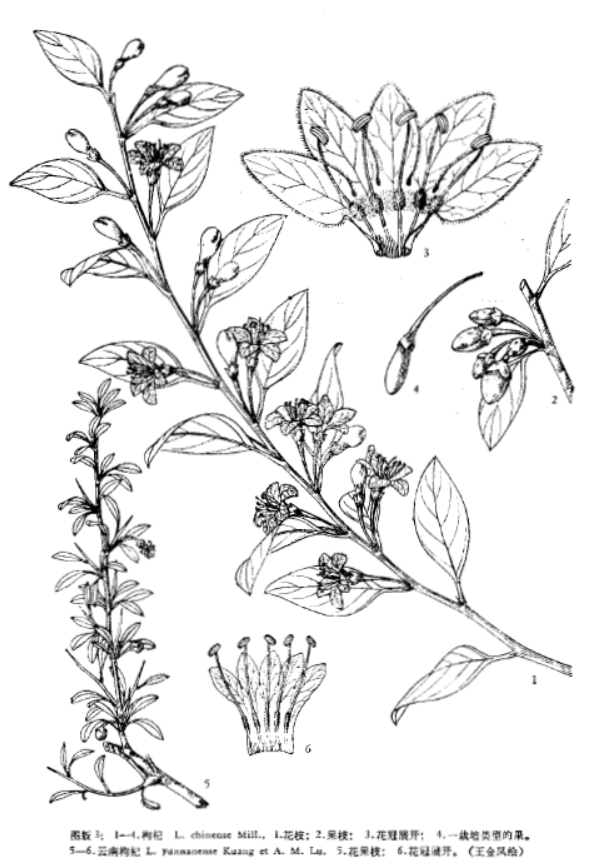

出现篇目
别名 蜜枳椇（音止矩）、蜜屈律（《广记》）、木蜜（《拾遗》）、木饧（同上）、木珊瑚（《广志》）、鸡距子（苏文）、鸡爪子（俗名）
古代记载 《毛诗故训传》
杞，木名也。（《毛传》注《将仲子》）
《毛诗草木鸟兽虫鱼疏》
杞，柳属也，生水傍，树如柳叶，粗而白色，木理微赤，故今人以为车毂。今共北淇水旁，鲁国泰山汶水边纯杞也。
《毛诗正义》
《四牡》传云：“杞，枸檵。”此直云木名，则与彼别也。陆机《疏》云：“杞，柳属也，生水傍，树如柳，叶粗而白色，理微赤，故今人以为车毂。今共北淇水傍，鲁国泰山汶水边，纯杞也。（《毛诗正义》疏《将仲子》）
《诗集传》
杞、柳屬也。生水傍、樹如柳、葉麄而白、色理微赤。蓋里之地域溝樹也。（《诗集传》集注《将仲子》）
《本草纲目》
恭曰∶枳椇子其树径尺，木名白石，叶如桑柘。其子作房似珊瑚，核在其端，人皆食之。 颂曰∶此《诗．小雅》所谓南山有枸也。陆机《疏义》云∶枳枸树高硕如白杨，所在皆有，枝柯不直。子着枝端，啖之甘美如饴，八、九月熟，江南特美之，谓之木蜜。能败酒味，若以其木为 诜曰∶昔有南人修舍用此木，误落一片入酒瓮中，酒化为水也。 藏器曰∶木蜜树生南方，人呼白石木，枝、叶俱甜。嫩叶可生啖，味如蜜。老枝细破，煎汁成蜜，倍甜，止渴解烦也。 时珍曰∶枳 木高三、四丈，叶圆大如桑柘，夏月开花。枝头结实，如鸡爪形，长寸许，纽曲，开作二、三歧，俨若鸡之足距。嫩时青色，经霜乃黄，嚼之味甘如蜜。每开歧尽处，结一、二小子，状如蔓荆子，内有扁核赤色，如酸枣仁形。飞鸟喜巢其上，故宋玉赋云∶枳枸来巢。《曲礼》云∶妇人之贽，椇、榛、脯脩，即此也。盐藏荷裹，可以备冬储。
当代记载 《中国植物志》
枳椇（ Hovenia acerba），鼠李科， 枳椇属植物。高大乔木，高10-25米；小枝褐色或黑紫色，被棕褐色短柔毛或无毛，有明显白色的 皮孔。花期5-7月，果期8-10月。产甘肃、陕西、河南、安徽、江苏、浙江、江西、福建、广东、广西、湖南、湖北、四川、云南、贵州。生于海拔2100米以下的开旷地、山坡林缘或疏林中；庭院宅旁常有栽培。印度、尼泊尔、锡金、不丹和缅甸北部也有分布。

<细井徇>

<细井徇>

<补遗雷公炮制便览>

<中国植物志>